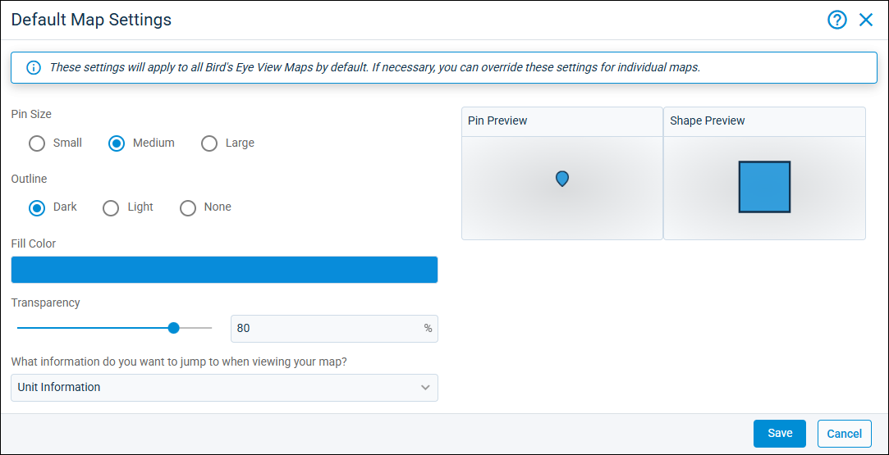
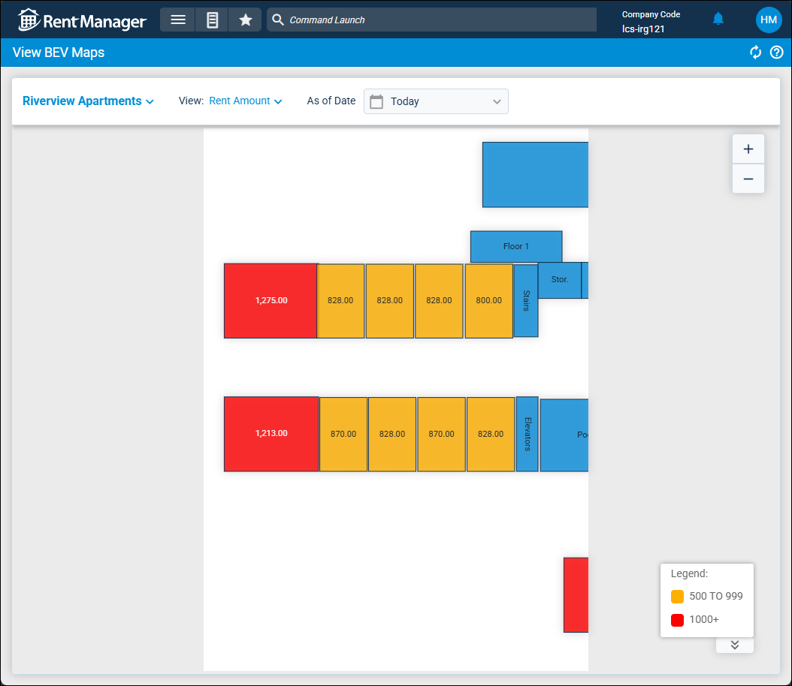

Source: https://rmxhelp.rentmanager.com/Topics/Express/KB/Birds-Eye-View.htm
Bird's Eye View (BEV)
Bird's eye view (BEV) is an innovative Rent Manager feature that allows you to use images of your properties to view Rent Manager information from above, similar to viewing a map. BEV consists of three layers: a map or background image of your property, unit shapes or pins where you outline a property's units and link them to their respective unit accounts, and overlays which present specified data over the unit outlines on your map.
BEV maps can be used for more than just residential units at rental properties. You can also use them to map out garages spaces, storage units, or even the available stylist booths at a salon.
BEV Maps
Before being able to use BEV, you need to add maps of your properties, create units on the maps, and then link them to unit accounts.
BEV maps consist of three layers:
-
a photo of a map or a background image
-
unit shapes that outline the units or pins that indicate the location of a unit
-
map views which present specified data over the unit shapes or pins
Add a BEV Map
You can create a BEV map by importing an overhead image of your property or creating a canvas in Rent Manager. You can then outline the locations of your units on the image and link those shapes or pins to the units in your database. This allows the map to display information about those specific units. For more information, refer to Add a Bird's Eye View (BEV) Map.
More Information
The map type selected during the BEV map creation determines if pins or shapes are used on the map. In order to use pins to define units on the map, you need to upload an image. The blank canvas tool only uses shapes.
After entering your map information, you must select whether you wish to add pins to the map for each unit or draw out the full shape of each unit.
| Option | Description |
|---|---|
|
Pins |
Quickly click and place pins on the map to mark units. This method can be useful for quickly setting up maps and relying on images to show the size and shape of the unit. This option can be selected only if you opted to upload an Image for your map and cannot be used for a Blank Canvas. |
|
Shapes |
Draw shapes for each unit on a map image or a blank canvas to mark the units on your map. This method can be useful for showing the size and shape of a unit on a blank canvas or on an image where it may not be clear where each unit begins and ends. |
Customize a BEV Map
After adding your property map to Rent Manager, you'll need to place your units on the map. The steps to mark your units on the map and link them to unit accounts vary depending on whether you selected the option to use Pins or Shapes when adding your map.
If you uploaded an image of your map, you can add pins to the image. On the left, a list of all units at the property display with the first unit automatically selected. Using Quick Add Mode, you can locate a unit's location on the map and click to drop the pin. If you are not using Quick Add Mode, you can use the toolbar to add a pin to the map.
If you uploaded a map image or generated a blank canvas, you can draw units onto the map or canvas. To add unit shapes and assign them to units, use the available shape tools.
After your map and units are set up, you can configure other settings for your map by click  Map Settings at the top of the page.
Map Settings at the top of the page.
For more information on setting up your BEV maps, refer to Edit BEV Map (Page).
BEV Map Settings
The BEV tool allows you to create unique maps that depict certain information about your properties and units. The Default Map Settings pop-up allows you to configure the default settings for this tool.

If necessary, you can override these settings for individual maps. The BEV Map Settings pop-up allows you to edit information for your map after a map is created. The settings here can be used to update or change the name of the map, select or deselect properties to which it applies, as well as how the map displays.

For more information on map settings, refer to Bird's Eye View (BEV) Default Map Settings (Pop-Up) and Bird's Eye View (BEV) Map Settings (Pop-Up).
Default Unit Information
In BEV maps, the unit information card displays when a pin or shape is clicked. The default information shown in cards can be customized from each map’s Map Settings. By editing the default unit information on your maps, you can ensure that each BEV map displays the most important details about your properties and units.
For more information on editing the default unit information, refer to Edit Bird's Eye View (BEV) Default Unit Information (Pop-Up).
Unit Information
Additionally, user-created map views can also be configured to override the default unit information, ensuring that the views you create display the most relevant details about your properties and units.
More Information
To configure the view’s unit information card, you must first check the Customize Unit Information when this view is applied box. If this is not checked, the map view’s unit information card will follow the Default Unit Information of the map to which it is applied.
For more information on overriding the default unit information, refer to Edit Bird's Eye View (BEV) Unit Information (Pop-Up).
BEV Map Views
To make the most of BEV, you can use the map settings as well as default and custom map views to access the information you need when you need it.
You can create map views that act as overlays to display specific information regarding the units. For example, you can use the Balance Due map view to physically see which units at your property have tenants with an outstanding balance. Or use the Service Issue map view to see if several recently reported leaks are happening in proximity to each other. Each map view has its own legend to identify the information displayed for that map view.
The following map views are available by default:
| Map View | Description |
|---|---|
|
All Units |
Displays basic information about the unit, such as the colors and unit names on the BEV map itself. |
|
Balance Due |
Indicates which units have tenants with an outstanding balance. The color of the unit pin or shape indicates how much the tenant owes. |
|
Delinquency Status |
Indicates which units have tenants with unpaid charges. The color of the unit pin or shape indicates how long they have been delinquent. |
|
Market Rent Amount |
Indicates the market rent amount established on each unit. The color of the unit pin or shape indicates how much the market rent is worth. |
|
Move Ins |
Displays which units have a prospect scheduled to move in and when, preventing overlapping leases on a unit. |
|
Move Outs |
Displays which units have a tenant that has an official move out date established, as specified on their lease details in the Move Out field. |
|
On Notice |
Displays which units have tenants that have given notice they are moving out, as specified on their lease details in the Notice field. |
|
Rent Amount |
Indicates the amount of rent the tenant at each unit is charged. The color of the unit pin or shape indicates how much they pay in rent. |
|
Service Issues |
Displays which units have open or resolved service issues associated. |
|
Tenant Display Color |
Unit pins and shapes are colored to match the color of the associated tenant as specified on their details page in the Display Color field. |
|
Unit Availability |
Displays which units are vacant and available on a prospect's move-in date, allowing you to determine which units a prospect can rent. |
|
Unit Status |
Unit pins and shapes are color coded to indicate their assigned unit status. |
|
Unit Type |
Unit pins and shapes are color coded to differentiate the unit types of each assigned unit. |
You can also edit map views as well as create custom ones. For more information on map views, refer to Manage BEV Map Views.
Using BEV Maps
Once you have added your BEV maps and customized your map views and settings the way you want them, you can begin leveraging the power of these interactive, data-rich maps. These visual resources can help you stay organized and proactive in your day-to-day operations.
For example, you can use a BEV map view to show units at your property that are available, or units with tenants who have an outstanding balance. BEV translates Rent Manager data into powerful visual tools. Depending on the setup of your map and the selected map view, you can also filter to view information for a specific date or date range, or view the units on each floor separately. The Legend at the bottom provides context about the color coding to help visualize the data displayed on the map.
For more information on viewing BEV maps, refer to View Bird's Eye View (BEV) Maps (Page).
